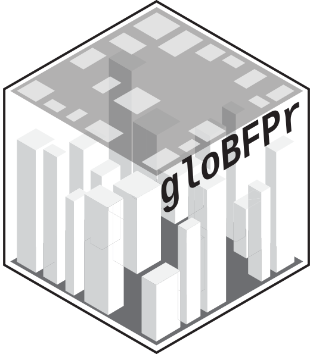

Build terrain, canopy and terrain-based building geometry for a case
Source:R/openfoam_terrain.R
prepare_foam_geometry.RdTurns the rasters written by prepare_openfoam_inputs into the
STL geometry prepare_foam_case needs. Everything is optional:
supply what you have and the rest is skipped.
Terrain is recovered from the fused DSM rather than used directly, because
the fused DSM is terrain + buildings + canopy and meshing it as ground under
a separate building STL would double-count every building. Given how
get_fused_dsm() builds it, bare earth comes back exactly as
fused_dsm - max(building_height, canopy_height, 0).
Usage
prepare_foam_geometry(
case_dir,
fused_dsm = NULL,
building_height = NULL,
canopy_height = NULL,
buildings = NULL,
height_col = NULL,
domain = NULL,
terrain_res = NULL,
canopy_res = 5,
min_tree_height = 2,
base_cell_size = 10,
skirt = 30,
quiet = FALSE
)Arguments
- case_dir
Character. OpenFOAM case directory.
- fused_dsm, building_height, canopy_height
SpatRaster or path or NULL. Typically
foam_inputs$files$fused_dsm,...$building_height_raster,...$canopy_height_raster.- buildings
sf polygons in local coordinates, or NULL to leave the existing building STL alone. Usually
readRDS(foam_inputs$files$buildings_rds).- height_col
Character. Building height column.
- domain
Named list with xmin/xmax/ymin/ymax/zmin/zmax; used to crop.
- terrain_res
Numeric. Resolution (m) to resample terrain to before triangulating. One vertex per cell, so a 1 m DEM over 1 km2 is a million vertices; default
max(5, base_cell_size / 2).- canopy_res
Numeric. Resolution (m) for the canopy box cloud. Default 5.
- min_tree_height
Numeric. Canopy cells below this are ignored. Default 2.
- base_cell_size
Numeric. Background mesh cell size, used only to pick
terrain_res. Default 10.- skirt
Numeric. Metres the terrain solid extends below its minimum. Default 30.
- quiet
Logical.
Value
Invisibly, a list with terrain_stl, canopy_stl,
building_stl, dem (SpatRaster) and dem_file - feed
these straight to prepare_foam_case.